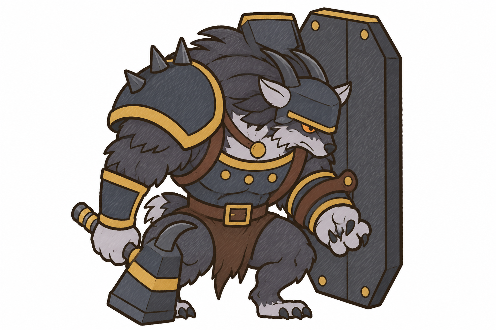
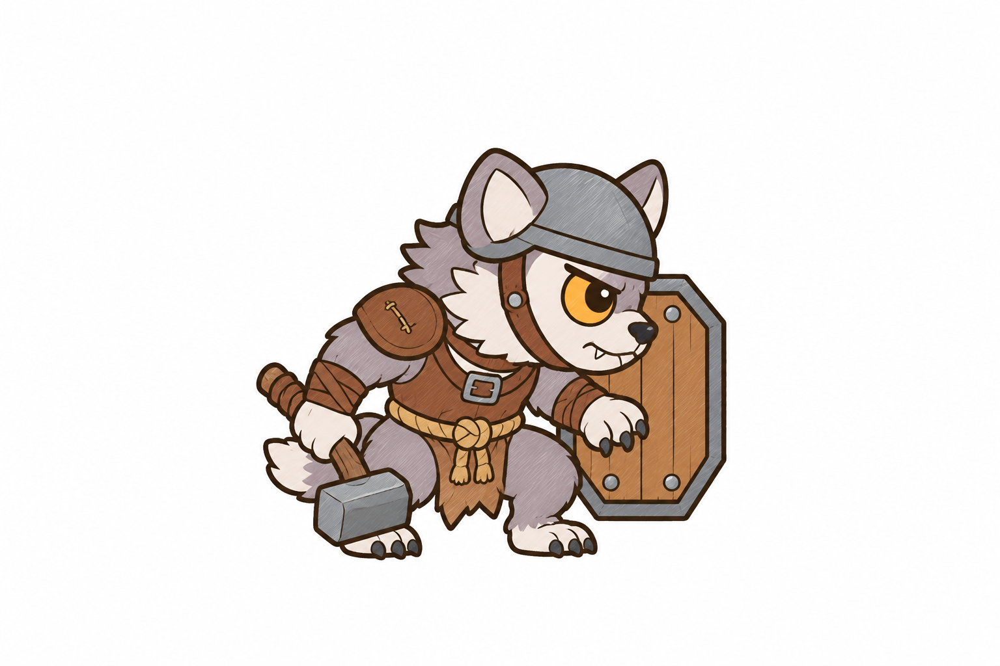
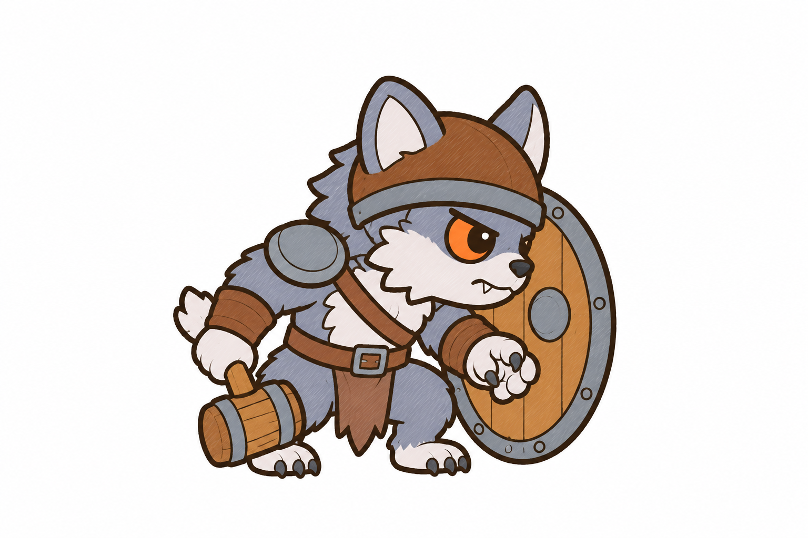
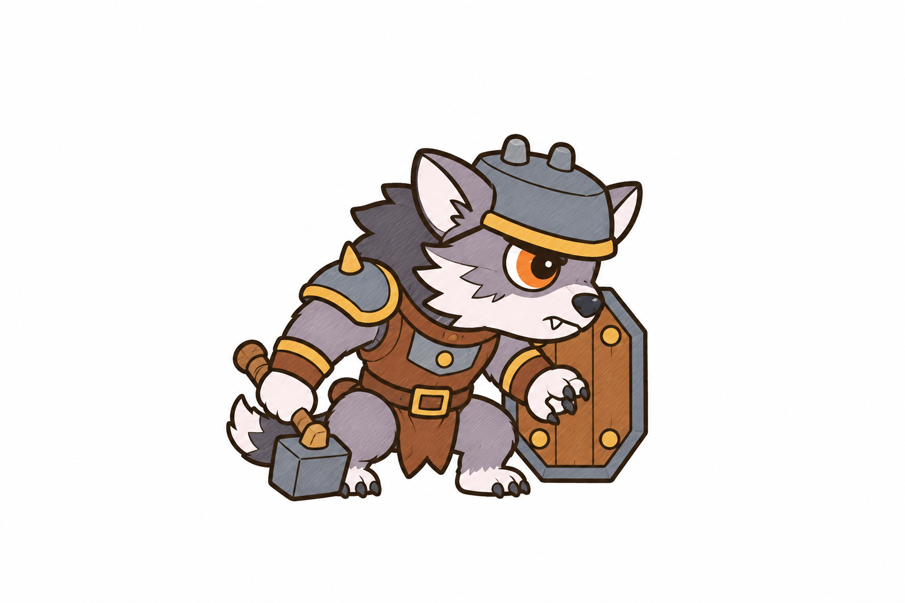
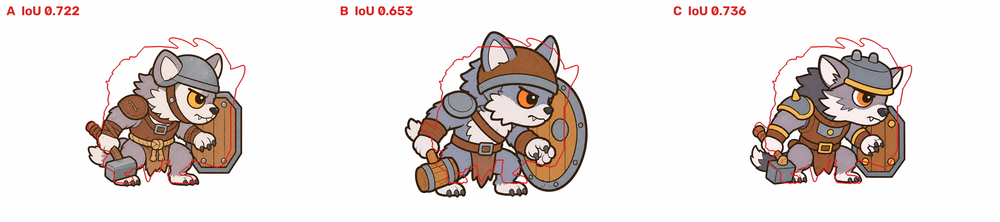

Bố cục rig ở tỉ lệ dạng non (dựng bằng da dạng 2): chỉ để so dáng, chỗ, cỡ

Dạng 2 đã duyệt (để so: dạng 1 nhạt hơn, ít giáp hơn)

A xám tro, đồ da + sắt thô: mũ sắt tròn quai da, giáp vai da khâu, áo gi lê da khoá sắt, đai thừng, quấn da cẳng tay, khiên gỗ tám cạnh viền sắt bốn đinh, búa khối nhỏ cán gỗ, mắt hổ phách

B xám xanh, mũ da: mũ da đai sắt, giáp vai một tấm sắt, ngực lông xù với dây đai chéo, bao tay da, khiên tròn gỗ núm sắt, búa là cái vồ gỗ hai đai sắt, mắt cam

C xám bạc + lưng than (dạng 2 thu nhỏ): mũ đỉnh bằng hai mầm vây vành đồng, giáp vai vòm một gai cụt viền đồng, áo da có tấm thép + đinh đồng, khiên gỗ tám cạnh đinh đồng, búa khối nhỏ, mắt cam

Viền đỏ = hình bóng bố cục rig chồng lên A, B, C (khớp 0,72 / 0,65 / 0,74). Cả ba bỏ cái bướu bờm (đúng dặn) và vẽ thân gọn hơn bố cục; A, C nhỏ hơn bố cục một chút, B to hơn. Lúc lắp rig, thân và tay chân là mảnh của rig nên sẽ hơi đậm người hơn concept; nếu bạn muốn sát concept hơn tôi thu thêm thân trên rig